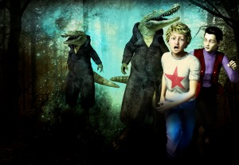

From the journal
Review of "My Wizard Buddy" from a Christian Perspective
Always helpful to get different perspectives on my book!
https://www.amazon.com/gp/customer-reviews/R34GZLUUB65QYY/
5.0 out of 5 stars
After a fight with his sister over her tablet computer he is sent outside to enjoy the weather and calm down By Mister Chris on September 30, 2016 Format: Paperback Tyler is an average eleven year old kid - with a big sister who is not going to let him invade her space or mess with her stuff, and parents who don't let him do what he wants, bullies at school, and no real friends. After a fight with his sister over her tablet computer he is sent outside to enjoy the weather and calm down. Feeling all alone in the world, and misunderstood, he wishes out loud for a best friend, and gets one, in the form of Dirk, an 11-year-old wizard with powers to rival any fictional wizard in fiction. On Dirk's home planet, everyone has magic, but he's bored there and wants to hang around with Tyler on Earth. Like Tyler, he seems lonely and in need of companionship.
But Dirk's magical skills get Tyler and him in a lot of serious scrapes, as Dirk assists him in dealing with bullies, cliques, breakfast, and a serious lack of entertainment. Dirk's 'help' often backfires, getting Tyler in way over his head, but Dirk is always there to get him out again, too. But as the hi-jinks and scrapes continue to escalate, Tyler wonders whether having Dirk around is worth the risk.
Content: Violence: G - While this is a MG Fantasy, there's just a bit of real danger. In one instance Tyler falls from a great height and fears that he's going to die. But Dirk protects him from harm.
Language: G - I do not remember any curse words at all in the novel.
Drug Content: G - Squeaky clean.
Adult Content: PG - Tyler's big sister has friends over, and they discuss boys a bit disparagingly. Tyler's friend Ryan has a thing for his sister. One of Tyler's friends has separated parents and has to be shuttled back and forth between them. His dad is having issues with a girlfriend.
Christian content: None. On the positive secular side, there is content putting a positive spin on parents that actually don't give kids everything they want, or neglect them. Having both parents together is also put in a positive light, and the control parents usually give their eleven-year-olds on what to eat or wear or do, is given a positive spin as well. The afterlife is discussed briefly. On the negative side, there are a couple scenes involving a Ouija board, and in one instance it's used to have a conversation with a dead relative. The use of the board is described in significant detail. Parents will need to be prepared to answer questions about what one is, and why playing with one might not be considered a good idea.
Final analysis: My Wizard Buddy is a kid-sized adventure, relatively light-hearted, into the life of an eleven year old boy dealing with common issues that age faces. As it's MG fiction, and consequently attention spans of readers are shorter, it's not very descriptive, and action jumps a bit from scene to scene, almost giving the feel of vignettes rather than a cohesive story line. It's well edited, and Tyler and a few of the other characters have a bit of dimension. As a MG adventure story, the pacing is right-sized, the characters sufficient for a quick, entertaining read, with a few life lessons thrown in for good measure. Five Stars. * I received an electronic copy for an honest review
https://www.amazon.com/gp/customer-reviews/R34GZLUUB65QYY/
5.0 out of 5 stars
After a fight with his sister over her tablet computer he is sent outside to enjoy the weather and calm down By Mister Chris on September 30, 2016 Format: Paperback Tyler is an average eleven year old kid - with a big sister who is not going to let him invade her space or mess with her stuff, and parents who don't let him do what he wants, bullies at school, and no real friends. After a fight with his sister over her tablet computer he is sent outside to enjoy the weather and calm down. Feeling all alone in the world, and misunderstood, he wishes out loud for a best friend, and gets one, in the form of Dirk, an 11-year-old wizard with powers to rival any fictional wizard in fiction. On Dirk's home planet, everyone has magic, but he's bored there and wants to hang around with Tyler on Earth. Like Tyler, he seems lonely and in need of companionship.
But Dirk's magical skills get Tyler and him in a lot of serious scrapes, as Dirk assists him in dealing with bullies, cliques, breakfast, and a serious lack of entertainment. Dirk's 'help' often backfires, getting Tyler in way over his head, but Dirk is always there to get him out again, too. But as the hi-jinks and scrapes continue to escalate, Tyler wonders whether having Dirk around is worth the risk.
Content: Violence: G - While this is a MG Fantasy, there's just a bit of real danger. In one instance Tyler falls from a great height and fears that he's going to die. But Dirk protects him from harm.
Language: G - I do not remember any curse words at all in the novel.
Drug Content: G - Squeaky clean.
Adult Content: PG - Tyler's big sister has friends over, and they discuss boys a bit disparagingly. Tyler's friend Ryan has a thing for his sister. One of Tyler's friends has separated parents and has to be shuttled back and forth between them. His dad is having issues with a girlfriend.
Christian content: None. On the positive secular side, there is content putting a positive spin on parents that actually don't give kids everything they want, or neglect them. Having both parents together is also put in a positive light, and the control parents usually give their eleven-year-olds on what to eat or wear or do, is given a positive spin as well. The afterlife is discussed briefly. On the negative side, there are a couple scenes involving a Ouija board, and in one instance it's used to have a conversation with a dead relative. The use of the board is described in significant detail. Parents will need to be prepared to answer questions about what one is, and why playing with one might not be considered a good idea.
Final analysis: My Wizard Buddy is a kid-sized adventure, relatively light-hearted, into the life of an eleven year old boy dealing with common issues that age faces. As it's MG fiction, and consequently attention spans of readers are shorter, it's not very descriptive, and action jumps a bit from scene to scene, almost giving the feel of vignettes rather than a cohesive story line. It's well edited, and Tyler and a few of the other characters have a bit of dimension. As a MG adventure story, the pacing is right-sized, the characters sufficient for a quick, entertaining read, with a few life lessons thrown in for good measure. Five Stars. * I received an electronic copy for an honest review
